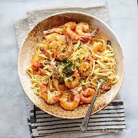

Creamy Garlic Shrimp Pasta

Above you can see one of my favourite dishes. A creamy garlic shrimp pasta.
This dish is easy to prepare, highly nutritious and can be made in 20 minutes or less!
Ingredients
- Shrimp
- Pasta
- Garlic
- Double Cream
- Oninions
- Black Pepper
- Salt
- Lemon
- Basil OR Parsley seasoning
Steps:
- Start of by preparing your vegetables. Chop up one whole oninion and two clovers of
galic.
- Get the pasta boiling! Pasta is relatively simply to make so you can often make pasta
while doing something else (such as chopping vegetables). If this is your first time
making pasta you can follow
this link
to a short video showing you how to make pasta.
-
Time to get to work on your garlic shrimp!
Fry your shrimp in one teaspon of oil.
-
Halfway through frying your shrimp add in your chopped oninions.
-
Fry for two minutes then add your garlic.
-
When the shrimp is done cooking pour in your double cream and squeeze half a lemon in there.
Be sure to turn the heat down! This way you can avoid burning the cream.
-
Season your cream with black pepper and salt.
-
When the flavours have blended just how you like them, go ahead and dish out the
pasta, adding the creamy shrimp on top.
-
After this you can season the plate lightly with either some basil or parsley.
-
Voila! You now have yourself a creamy delicious pasta!
Home page